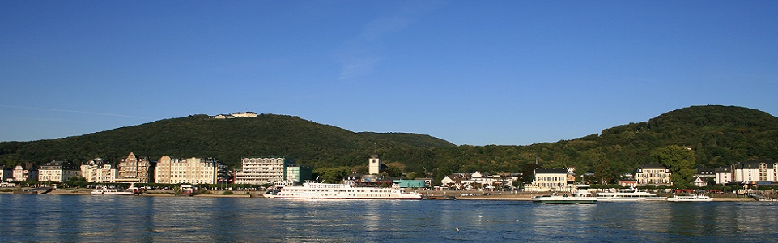

Mathematics of Program Construction 2015 - Welcome
The Mathematics of Program Construction (MPC) conferences aim to promote the development of mathematical principles and techniques that are demonstrably practical and effective in the process of constructing computer programs, broadly interpreted.
The 2015 MPC conference will be held in Königswinter, Germany, from 29th June to 1st July 2015. The previous conferences were held in Twente, The Netherlands (1989), Oxford, UK (1992), Kloster Irsee, Germany (1995), Marstrand, Sweden (1998), Ponte de Lima, Portugal (2000), Dagstuhl, Germany (2002), Stirling, UK (2004, colocated with AMAST), Kuressaare, Estonia (2006, colocated with AMAST), Marseille, France (2008), Québec City, Canada (2010, colocated with AMAST), and Madrid, Spain (2012).
Registration
Travel and Local Information
See the page listing travel options.
Important dates
| Abstract submission | 26 January 2015 |
| Paper submission | 2 February 2015 |
| Author notification | 16 March 2015 |
| Camera ready copy | 13 April 2015 |
| Early registration | 29 May 2015 |
| Hotel rooms reserved until | 29 May 2015 |
| Conference | 29 June - 1 July 2015 |
Programme committee
| Ralf Hinze | University of Oxford, UK (chair) |
| Eerke Boiten | University of Kent, UK |
| Jules Desharnais | Université Laval, Canada |
| Lindsay Groves | Victoria University of Wellington, New Zealand |
| Zhenjiang Hu | National Institute of Informatics, Japan |
| Graham Hutton | University of Nottingham, UK |
| Johan Jeuring | Utrecht University and Open University, The Netherlands |
| Jay McCarthy | Vassar College, US |
| Bernhard Möller | Universität Augsburg, Germany |
| Shin-Cheng Mu | Academia Sinica, Taiwan |
| David Naumann | Stevens Institute of Technology, US |
| Pablo Nogueira | Universidad Politécnica de Madrid, Spain |
| Ulf Norell | University of Gothenburg, Sweden |
| Bruno C. d. S. Oliveira | The University of Hong Kong, Hong Kong |
| José Nuno Oliveira | Universidade do Minho, Portugal |
| Alberto Pardo | Universidad de la República, Uruguay |
| Christine Paulin-Mohring | INRIA-Université Paris-Sud, France |
| Tom Schrijvers | KU Leuven, Belgium |
| Emil Sekerinski | McMaster University, Canada |
| Tim Sheard | Portland State University, US |
| Anya Tafliovich | University of Toronto Scarborough, Canada |
| Tarmo Uustalu | Institute of Cybernetics, Estonia |
| Janis Voigtländer | Universität Bonn, Germany |
Local organizers
| Ralf Hinze | University of Oxford, UK (co-chair) |
| Janis Voigtländer | Universität Bonn, Germany (co-chair) |
| José Pedro Magalhães | Standard Chartered Bank, UK |
| Maciej Piróg | University of Oxford, UK |
| Nicolas Wu | University of Bristol, UK |